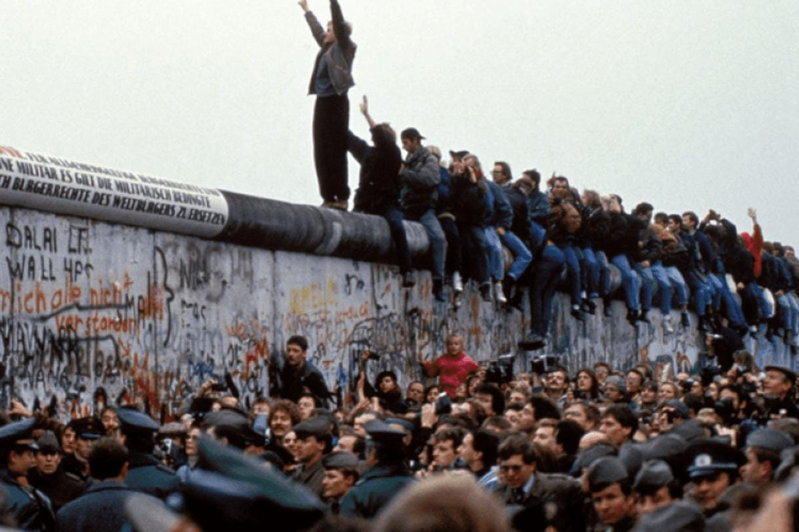
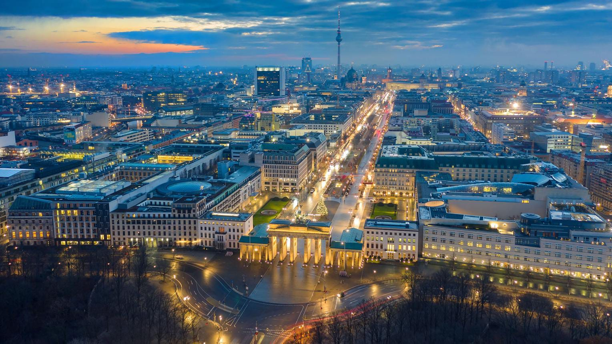

Alemanha
Alemanha
Guerras e Impactos Políticos
A Alemanha teve um papel central em alguns dos maiores conflitos do século XX, que transformaram seu território, sua política e sua sociedade.

Principais conflitos

Primeira Guerra Mundial
A Alemanha foi uma das principais potências do conflito (1914-1918).

Segunda Guerra Mundial
A Alemanha, sob o regime nazista, iniciou um conflito de grandes proporções (1939-1945).

Guerra Fria / Divisão da Alemanha
Após 1945, o país foi dividido entre Alemanha Ocidental e Alemanha Oriental.
Impactos Políticos

Mudanças do Governo e na Sociedade
As guerras levaram à queda de regimes, grandes reformas políticas e mudanças na organização do país e na vida da população.

Consequências internacionais
A Alemanha perdeu territórios, foi ocupada por potências estrangeiras e passou a ter um papel diferente no cenário mundial.
Linha do tempo

Antes das Guerras
Formação do Império Alemão e crescimento como potência europeia.

Guerras Mundiais
Participação nos dois conflitos e grandes destruições.

Divisão da Alemanha
País dividido em Ocidente e Oriente durante a Guerra Fria.

Reunificação
Em 1990, a Alemanha é reunificada, retomando sua unidade.
A Transformação da Alemanha

A Queda do Muro de Berlim
A Queda do Muro de Berlim foi um dos acontecimentos mais importantes da história alemã e marcou o enfraquecimento da Guerra Fria. Construído em 1961, o muro dividia a cidade de Berlim em duas partes: Berlim Ocidental, ligada aos países capitalistas, e Berlim Oriental, controlada pelo governo socialista da Alemanha Oriental. Durante quase três décadas, a divisão separou famílias, amigos e comunidades, além de representar a disputa política e ideológica entre Estados Unidos e União Soviética. Em 9 de novembro de 1989, após manifestações populares e mudanças políticas no governo da Alemanha Oriental, as fronteiras foram abertas e milhares de pessoas começaram a atravessar o muro. A população celebrou o acontecimento, que simbolizou a liberdade e o desejo de reunificação do país. Posteriormente, em 3 de outubro de 1990, a Alemanha foi oficialmente reunificada, encerrando um longo período de divisão territorial e política.

Alemanha nos dias Atuais
Atualmente, a Alemanha é considerada uma das principais potências econômicas e políticas do mundo, tendo grande influência na Europa e em organizações internacionais. Depois de enfrentar duas guerras mundiais, a divisão territorial e um longo processo de reconstrução, o país conseguiu desenvolver uma economia industrial forte e se destacar em áreas como tecnologia, engenharia, indústria automobilística e pesquisa científica. Sua capital, Berlim, é um importante centro cultural, histórico e político, reunindo construções antigas e modernas que representam diferentes períodos de sua trajetória. Além disso, a Alemanha possui um sistema de educação desenvolvido, infraestrutura de transporte avançada e participação importante nas decisões da União Europeia. Mesmo com seu crescimento, o país ainda enfrenta desafios, como o envelhecimento da população, questões relacionadas à imigração e a necessidade de adaptar sua indústria às novas tecnologias e às mudanças ambientais.

A reconstrução da Alemanha após a Segunda Guerra
Após o fim da Segunda Guerra Mundial, em 1945, a Alemanha enfrentou uma situação extremamente difícil. Grande parte de suas cidades havia sido destruída pelos bombardeios, sua economia estava enfraquecida e milhões de pessoas precisavam reconstruir suas vidas. O território alemão foi dividido em quatro zonas de ocupação, administradas pelos Estados Unidos, Reino Unido, França e União Soviética. Em 1949, essa divisão deu origem a dois países: a Alemanha Ocidental, com influência capitalista, e a Alemanha Oriental, sob influência socialista. Na parte ocidental, programas de recuperação econômica e investimentos ajudaram a reconstruir fábricas, moradias e infraestrutura, contribuindo para um rápido crescimento econômico conhecido como Milagre Econômico Alemão. Já a Alemanha Oriental seguiu um modelo econômico diferente, com forte controle estatal. Esse processo de reconstrução transformou profundamente o país e estabeleceu as bases para a Alemanha moderna, embora a divisão entre as duas partes só tenha terminado oficialmente em 1990.